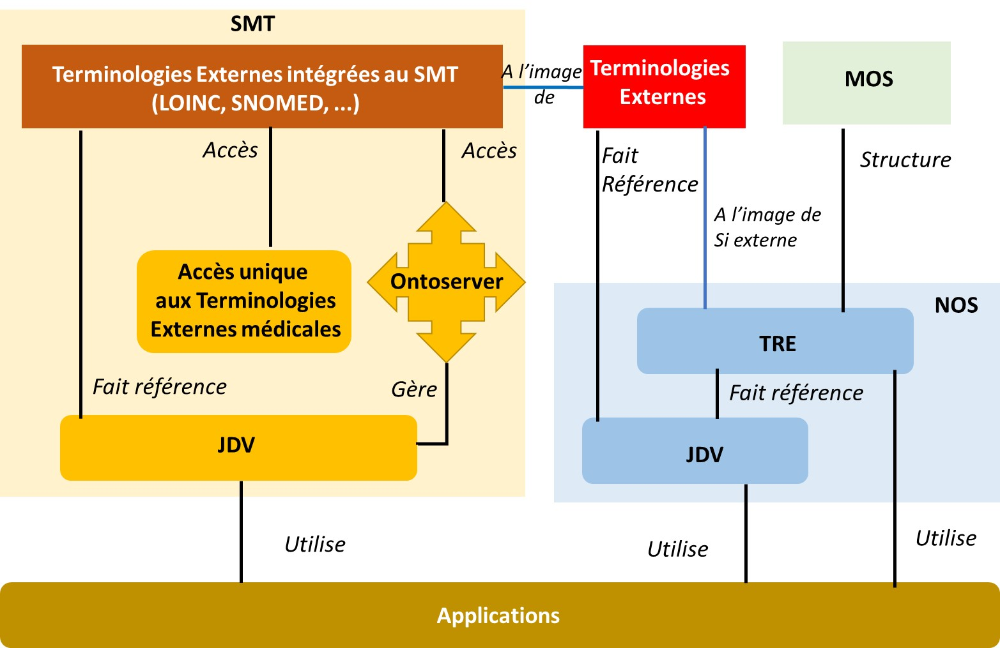
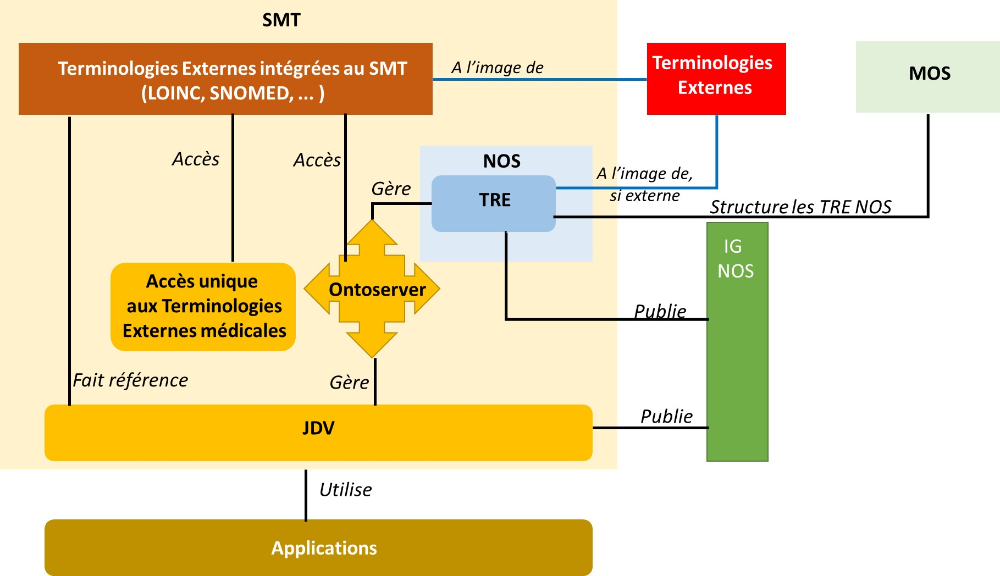
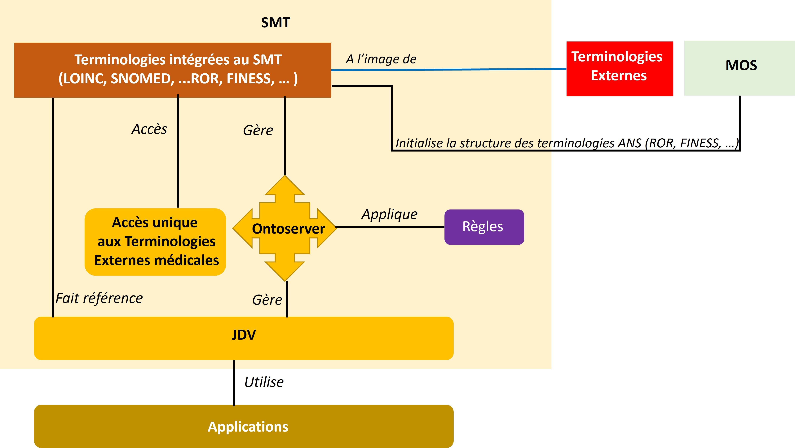

Nomenclatures des objets de santé (NOS) - Local Development build (v1.4.0) built by the FHIR (HL7® FHIR® Standard) Build Tools. See the Directory of published versions
Migration
DRAFT au 28/08/23
Retour à la page d’accueil des NOS
Les étapes de la migration des NOS dans le SMT
Résumé
La migration des NOS dans le SMT a pour principal objectif d’avoir un seul point de vérité pour les terminologies de référence du SMT et les nomenclatures NOS.
Cette migration consiste à gérer les NOS (TRE, JDV, ASS) via l’outil SMT “Ontoserver” et à publier ces NOS dans un premier temps dans l’IG NOS, puis en cible, à publier les TRE NOS via le SMT.
Représentation de l’existant
Aujourd’hui : Il existe donc 2 systèmes indépendants de construction et d’accès aux terminologies :
- Le SMT qui offre un accès unique aux terminologies externes Médicales et à certains JDV
- Les TRE et les JDV NOS qui définissent les domaines de valeurs des attributs du MOS
Critique de l’existant :
- Deux points de vérité : SMT et NOS
- Doublons entre les TRE externes des NOS et les terminologies de références publiées sur le SMT
- Des contrôles manuels sur la constitution des JDV des NOS ne permettent pas une qualité optimale
- Pas de gestion de version

Vue des NOS et du SMT aujourd'hui pour les nomenclatures NOS
Les étapes de la migration
La migration des NOS vers le SMT se fait en deux principales étapes :
- Demain : Peuplement des NOS dans le SMT
- Cible : Constitution des Terminologies de référence par unité de production, ANS comprise
Première étape : Peuplement des NOS dans le SMT
Consiste à peupler le SMT avec les TRE et les JDV NOS actuelles
- Définir les TRE et les JDV selon les règles du SMT (FHIR)
- Retrait des doublons entre les TRE externes et les terminologies du SMT, et plus généralement, retrait de toutes les TRE externes ayant déjà un OID
- Création d’autant de JDV que nécessaire pour que les applications n’accèdent plus directement aux TRE.
Résultats :
- Un seul point de vérité pour les NOS : le SMT
- Plus de doublons entre les Terminologies de référence du SMT et les TRE des NOS
- Plus d’accès direct aux TRE , mais uniquement via un JDV
- Les NOS (TRE et JDV) sont définies et gérées dans Ontoserver
- Gestion des versions et traçabilité des mises à jour
- Les TRE n’étant pas publiées dans le SMT, l’IG NOS permet de consulter les NOS ( et de les télécharger)
Limites :
- Les TRE ne sont pas de “vraies” terminologies au même titre que LOINC, c’est pourquoi elles ne sont pas accessibles via le SMT
- 3 modes de consultation des NOS :
- via le SMT pour les terminologies de référence externes connues du SMT,
- via Ontoserver pour les administrateurs des NOS,
- via l’IG NOS pour les consommateurs.

Peuplement des NOS dans le SMT
En cible : Constitution des Terminologies de Référence par Unité de production ANS
Consiste à créer des terminologies de référence par unité de production ANS et à générer les JDV à partir de règles métier explicites
- Définir les terminologies de référence de chaque unité de production de l’ANS (RPPS, Finess, ROR, …) à l’aide du MOS et des TRE existantes
- Le SMT permet alors l’accès aux terminologies externes médicales mais aussi aux terminologues des unités de production de l’ANS.
- Le SMT permet alors de définir les règles de construction automatique des JDV à partir des Terminologies de références du SMT
- L’IG NOS n’est plus utile
Résultats attendus:
- Un seul point de vérité des terminologies de référence et des JDV
- Gestion des version et traçabilité
- Chaque unité de production est responsable de ses terminologies,
- L’équipe MOS/NOS est outillée pour assurer la cohérence globale des terminologies et des JDV de chaque unité de production ANS

Constitution des Terminologies de référence par Unité de production ANS